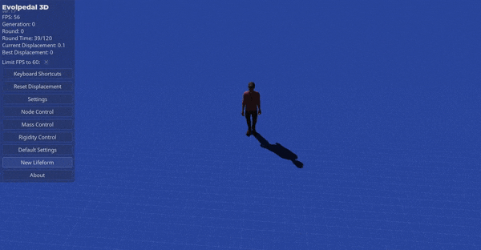

GodMan
Just looking for something third person where when the player dies you can orbit the camera around your body, but not a fly cam.

Just looking for something third person where when the player dies you can orbit the camera around your body, but not a fly cam.

I see this thread is old but whatever.
I don’t have it now but I once did a third person camera (taken from the character demo) with an orbit. If you do LookAt:() while keeping a minimum Z distance AND translating on X the axis you’ll get a perfect, predictable orbit. If you still need this I’ll look for it.
You can then slowly adjust Y height to spiral up/down around the player. The cool thing is you can go immediately from wherever your current camera position is to this orbit.
Sounds great. Did you have it on Github??
Don’t have a github but I redid it real quick. This is the quick and dirty orbit.
This is lua but it’s trivial to convert. You can mess with the values and do more elegant things from here, like zooming or specific height paths.
The timer value obviously can be taken from somewhere else, too. Slerp might make more sense but this “just works.”
local orbitRate = 4
local maxDist = 10
local minDist = 8
timer = timer + 1 * timeStep
cameraNode:Translate(Vector3(orbitRate, 0, 1)*timeStep)
cameraNode:LookAt(Vector3(deadPlayerPos))
if (deadPlayerPos - cameraNode.position):Length() > maxDist then
cameraNode:Translate(Vector3(0, 0, 1) *timeStep)
end
if (deadPlayerPos - cameraNode.position):Length() < minDist then
cameraNode:Translate(Vector3(0, 0, -1) * timeStep)
end
cameraNode.position.y = cameraNode.position.y + math.sin(timer)/20
cameraNode.position.y = Clamp(cameraNode.position.y,1,10)

Looks good. I will try this when I get a chance.
Thanks